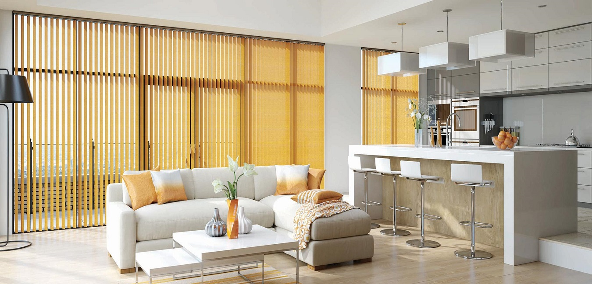

Geniş yüzey uyumu
Büyük pencere ve cam cephelerde tek parça, düzenli ve dikey bir görsel ritim oluşturur.
Dikey perde, tavandan zemine uzanan lamelleri sayesinde özellikle geniş pencere ve cam cephelerde düzenli bir görünüm oluşturur. Lamellerin açısı değiştirilerek ışık yönlendirilebilir; perde yana toplanarak cam yüzey daha fazla açılabilir. Bu yapı, ofis ve geniş salonlarda hem fonksiyonel hem de mimari bir çözüm sunar.

Ölçüye göre çözüm • PerdeaDoğru perde seçimi yalnızca renk tercihinden ibaret değildir. Işık yönü, mahremiyet, pencere ölçüsü, kullanım sıklığı ve iç mekân dili birlikte değerlendirildiğinde daha dengeli bir sonuç elde edilir.
Büyük pencere ve cam cephelerde tek parça, düzenli ve dikey bir görsel ritim oluşturur.
Lameller çevrilerek gün ışığının geliş açısı ve mahremiyet seviyesi ayarlanabilir.
Kullanılmadığında lameller belirlenen tarafa toplanarak cam yüzeyin daha açık kullanılmasına imkân verir.
Dikey çizgiler tavan yüksekliğini vurgulayarak modern ofis ve yaşam alanlarında güçlü bir etki yaratır.
Mekânın ışık koşulu ve pencere yapısına göre uygun sistem seçildiğinde dikey perde farklı yaşam ve çalışma alanlarında değerlendirilebilir.
Teklif istemeden önce aşağıdaki dört noktayı belirlemek, ürün ve mekanizma seçimini hızlandırır.
Geniş yüzeylerde ray uzunluğu, lamel adedi ve toplanma yönü kullanım konforunu etkiler.
Perdenin sağa, sola veya uygun sistemde iki yana toplanması kapı ve geçiş noktalarına göre seçilmelidir.
Ofiste ekran parlamasını azaltmak ile yaşam alanında yumuşak gün ışığı sağlamak farklı kumaş ihtiyaçları doğurabilir.
Dikey sistemlerde doğru boy ölçüsü hem kullanım hem de görsel bütünlük için önemlidir.
Dikey perde fiyatları; ray ve toplam genişlik, yükseklik, lamel/kumaş türü, toplanma biçimi ve montaj detayına göre değişebilir. Geniş cam uygulamalarında ölçü üzerinden teklif almak en sağlıklı yöntemdir.
Geniş salonlar, ofisler, toplantı odaları, cam cepheler ve ticari alanlarda kullanılabilir. Büyük yüzeylerde düzenli görünüm sağlaması önemli avantajlarından biridir.
Lameller kendi ekseninde çevrilerek ışığın geliş yönü değiştirilebilir. Gerektiğinde lameller yana toplanarak cam yüzey açılabilir.
Uygun ray yerleşimi ve toplanma yönü planlandığında geniş sürgülü cam alanlarda değerlendirilebilir. Kapının kullanım yönü ölçü aşamasında dikkate alınmalıdır.
Evet. Özellikle tavandan zemine camların bulunduğu geniş salon ve modern yaşam alanlarında mimari bir görünüm sağlayabilir.
Aynı pencere için farklı ışık kontrolü ve dekorasyon seçeneklerini inceleyerek doğru sistemi daha kolay belirleyebilirsiniz.
Bilgilerinizi eksiksiz doldurduğunuzda WhatsApp açılır ve ürün talebiniz 0 531 430 85 65 numarasına gönderilmeye hazır mesaj olarak oluşturulur.